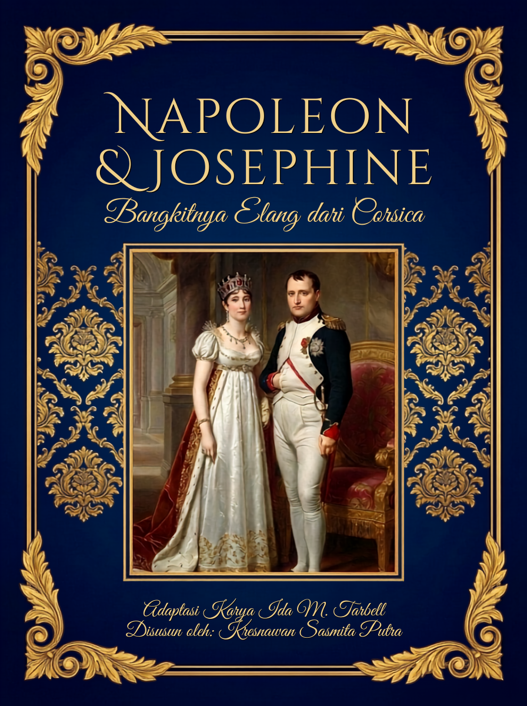
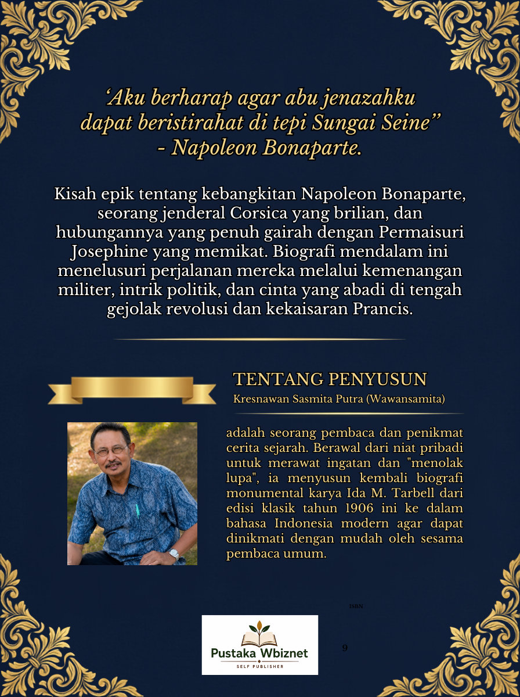

Bangkitnya Elang dari Corsica menuju Takhta Prancis
Adaptasi Bahasa Indonesia Modern dari Mahakarya Biografi Klasik (1906) karya Ida M. Tarbell. Disusun kembali secara populer untuk merawat ingatan sejarah dan semangat "menolak lupa".
Bagaimana seorang remaja dari pulau kecil Corsica yang pernah dihina dan mengalami kemiskinan tumbuh menjadi penakluk paling ditakuti di benua Eropa? Dan bagaimana seorang wanita yang selamat dari pisau gilotin naik takhta menjadi Permaisuri Prancis?
Buku biografi karya Ida M. Tarbell (1906) ini menyajikan secara utuh dan otentik kronologi perjalanan hidup Napoleon Bonaparte dan Josephine de Beauharnais—mulai dari kemiskinan di Brienne, kemenangan taktis di Austerlitz, romantisme di Malmaison, tragedi salju di Rusia, hingga pengasingan sunyi di St. Helena.

1. Status Karya Asli: Karya biografi asli karya Ida M. Tarbell (1906) telah berstatus Milik Umum (Public Domain).
2. Tujuan Adaptasi: Disusun sebagai bacaan edukatif populer non-akademis untuk masyarakat umum.
3. Hak Adaptasi: Susunan naskah bahasa Indonesia dan tata letak e-book ini melekat pada penyusun.